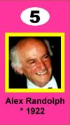

|
Code 777 | |||
|
This was invented by Alex Randolph, who also invented Twixt and many other games. Alex is one of the few game inventors who actually made a living from games. Code 777 is somewhat like What’s That on My Head? and Alex wanted to give me credit for the idea and also give me a portion of the royalties. I suggested that both our names be on the game, but he wanted to use only mine (and I still haven’t figured out why). Alex always appreciated my games and he feels that with some modification they could have wider appeal. He told me that Code 777 would have the general appeal that What’s That on My Head? lacked. I didn’t understand why, because both games looked equally complicated to me. But Code 777 has been quite popular and my original version of What’s That on My Head? has disappeared. So I guess Alex knew what he was doing. Code 777, by the way, is a very good game. | |||
|
Genius Rules (known in Germany as Geheim Code) | |||
|
This is also invented by Alex Randolph and it’s his attempt to bring wide appeal to my game Eleusis. But something must have gone terribly wrong, because Genius Rules is awful. Hardly anyone bought it here or in Germany. Instead of standard playing cards it uses a special deck with pictures of philosophers and scientists. Not only is it pretentious, but the cards are ugly. And instead of the four suits of standard cards, these cards are divided into three suit-like categories, making it hard to create rules that combine these three-value suits with other variables that have only two values. Even worse, the dealer can’t make up his own rule but must use one that is provided on a card he draws from a different deck. That leads to a perfect, and very dull, strategy for playing the game. (The strategy is this: you make a list of all the possible rules. When the dealer declares a card right or wrong, you cross out all the rules that would not lead to the same call. When only one rule remains, that’s the dealer’s rule.) Actually, I’ve come to realize that if a group is playing Eleusis for the first time, then it would be a good idea for the dealer to pick a rule from a fixed list of simple rules. But it’s a good idea only for the first one or two hands they play. I’ve added something along these lines to my latest write-up of Eleusis. | |||
|
Generally, I don’t like the idea of special cards for Eleusis, but you might take a look at what Ulrich Roth has been doing with the game. He is a game inventor who lives in Barcelona. He created a set of cards that he provides free of charge and they have been rather popular. His cards picture historical characters, authors, philosophers, and game inventors! At the right is my favorite, but I also like the one of Alex. I never thought I’d be on something like a trading card (I imagine someone saying, “I’ll trade you two Alex Randolphs for one Robert Abbott”). Now … if I can only license my picture for a lunch box. |
 | |||
|
Back to Robert Abbott’s Games |